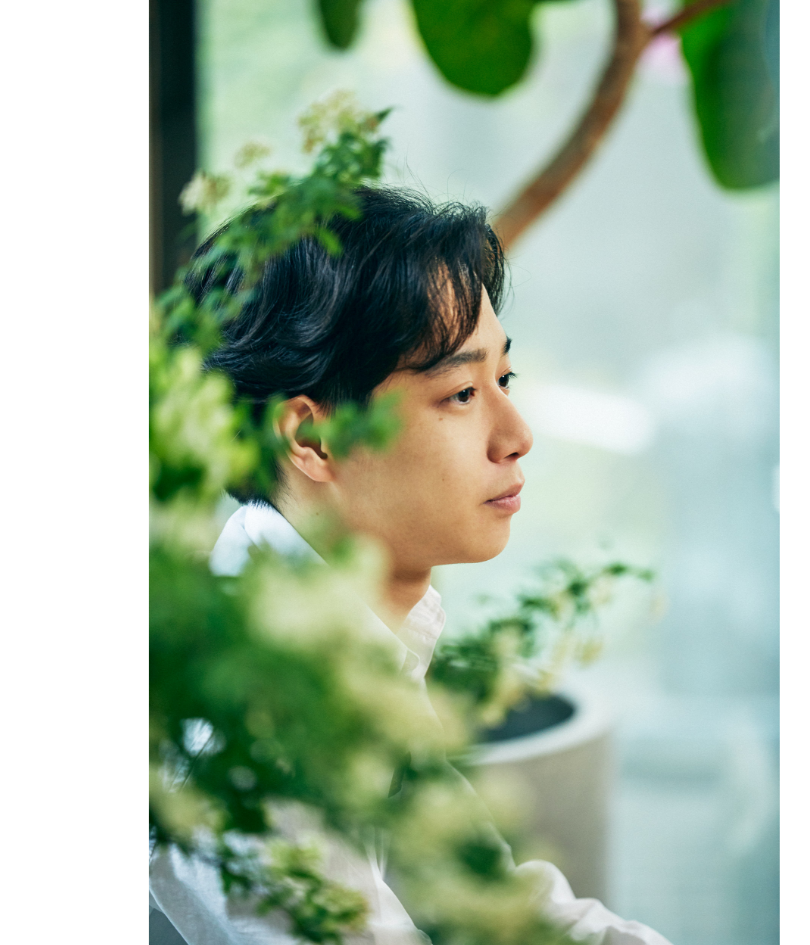

Interview CATAL DESIGN
2022.05.25
1600年代にルーツを持つ梨園の名家に生まれ、4歳から舞台を踏み、11歳で人間国宝である祖父と「連獅子」を共演。若手歌舞伎俳優として邁進し続ける片岡千之助さんは、写真家マリオテスティーノによる被写体への抜擢や、〈パシャ ドゥ カルティエ〉のアチーバー就任など、他分野でも異彩を発揮。今回はまだ22歳の彼のONとOFFを伺い、その素顔に迫る。
幕が上がる瞬間には、無心になるようにしています。次のシーンや台詞を考えるのは余計な意識であって、全てを忘れてこそ自然な表現ができる。稽古を積んで、体に芝居を入れ込むことは基本であり、そうでなければ成り立ちません。もちろん稽古の時間がきつく感じることはありますよ。本番の舞台は大好きですが、稽古が好きなわけではない(笑)。いかに気持ち良く舞台に立てるかをモチベーションにしています。

意識的な切り替えでオンとオフの振り幅が大きくなるよりは、落差の無いなめらかな時間の流れの中で寛ぎたい。舞台には1ヶ月に2日の休みがありますが、僕はそこで休みすぎるとリズムが途切れて、オンに切り替えるのに苦労するタイプ。モチベーションを絶やさないために、お休みの日に取材や撮影をお受けするようにしているんです。息をつける時間は、その合間や終わった後、ふとした時に訪れます。それくらいのオフが僕には丁度いいんです。
足腰や体幹の必要な筋力は、踊りの稽古で自ずと付きます。連獅子というハードな演目では筋トレをしたこともありますが、基本的には日々踊ることが大切。ちなみに連獅子は何度か演じていて、14歳の前々回と21歳の前回では自分の意識が大きく変わりました。以前は元気に踊り切ろうと思っていたけれど、歳を重ねて作品自体を俯瞰するようになった。自分の役が大切なのは前提で、作品の世界観に対する意識が強くなりました。同じ演目でも新しい発見をしながら、次の段階に登っていく感覚があります。そもそも僕は飽き性なんです。１日１日、少しでも変化を見つけなければ気が済まない。
友人達の多くは今ちょうど就職して、仕事が始まったタイミング。すぐ友人と会えた学生時代とは違って空き時間は1人で寛ぐことが増えましたが、こういう時間もいいものですね。家にこもるのが嫌いじゃないと気付きましたし、天気が良ければ散歩にも出かけます。コーヒーが好きなんですが、表参道によく行く純喫茶がありぶらぶらすることも。
目標はあえて決めません。然るべき時に、そのタイミングがやって来ると思っているから。明日何が起きるか分かりませんし、目の前のことに集中したいです。20代でやりたい演目はありますが、思っていれ出来るだろう…と置いておき、今を一生懸命に取り組む。これまでを振り返ると、そうして階段を登ってきたと感じます。舞台は積み重ねの世界であり、もちろん僕はまだまだですが、もしかしたら死ぬまでそう思い続けるのかもしれない。終わりが見えないからこそ面白いのかな、と。
実は夜型です。朝は寝られるだけ寝ていたくて、寝起きもよくないかも…。まれに早起きして舞台前の復習をすることもありますけどね。終演後には家でご飯を食べながらのんびりしたり、コーヒーを飲んで落ち着いたり、割と深い時間まで起きています。ちなみに嫌いな食べ物はなくて、どんなメニューでも美味しいものなら好き(笑)。欲を言えば、仲の良い人と食べれたら幸せですよね。
歌舞伎の舞台では、初日と千秋楽にきちんとスーツを着るんです。今日は気合を入れて、しっかり洋服を着るという日に、LG Stylerでパリッとセットしたジャケットを着たいですね。日常着だけでなく、大事な服をケアするのに活躍しそうです。
2000年、東京生まれ。屋号は松嶋屋。
2004年、歌舞伎座にて4歳で初舞台。
以後、数々の舞台を踏みながら2012年、12歳最年少で自主公演「千之会」を主催するなど芸事への研鑽を積んでいる。2017年には、ペニンシュラ・パリにて歌舞伎舞踊を披露するなど多岐にわたって活躍。
2004年、歌舞伎座にて4歳で初舞台。
以後、数々の舞台を踏みながら2012年、12歳最年少で自主公演「千之会」を主催するなど芸事への研鑽を積んでいる。2017年には、ペニンシュラ・パリにて歌舞伎舞踊を披露するなど多岐にわたって活躍。
Interview CATAL DESIGN